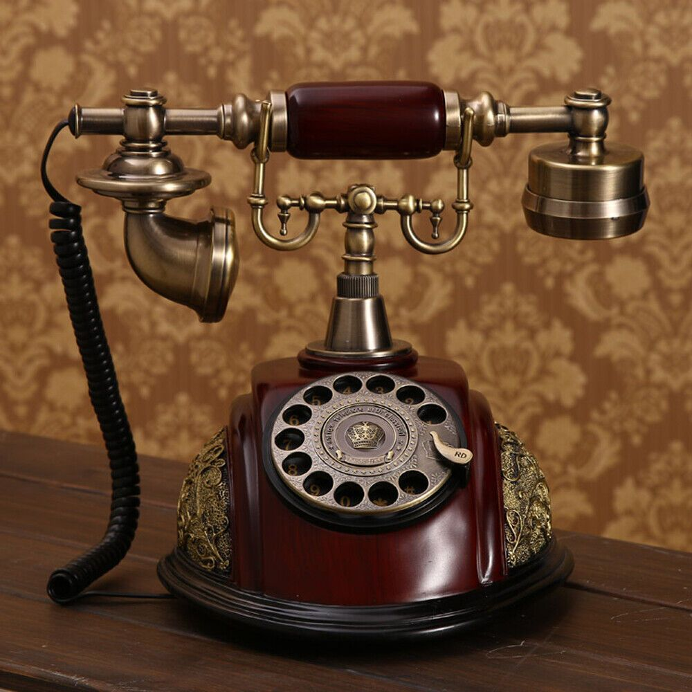
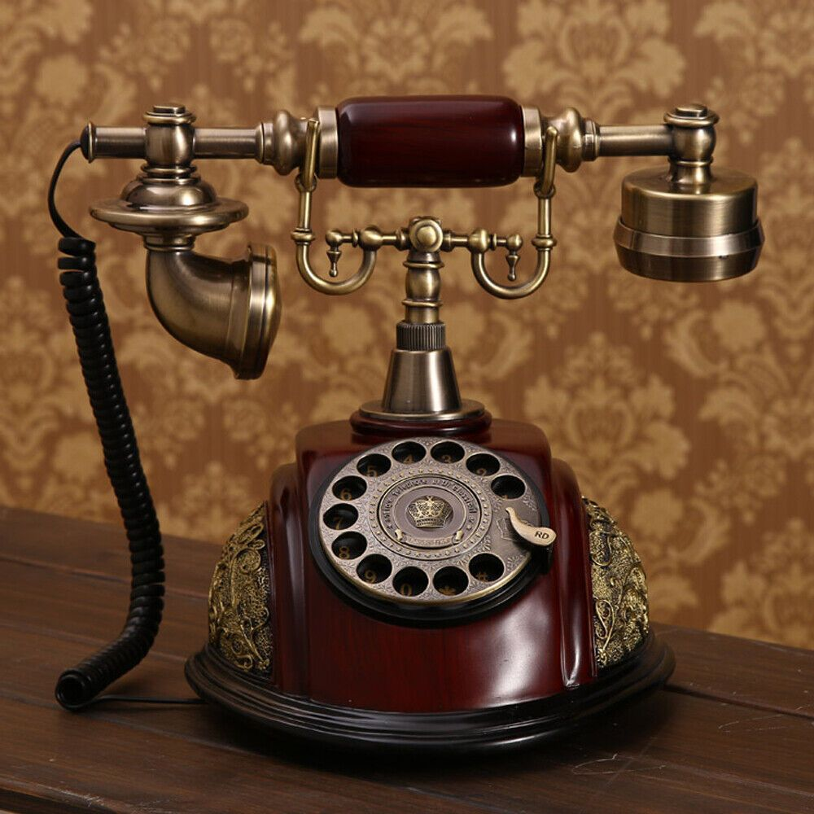
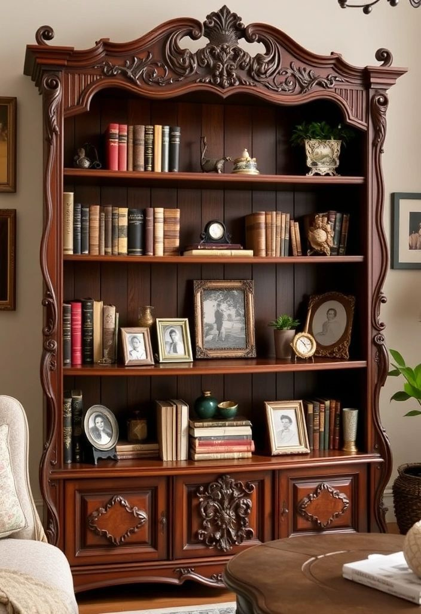
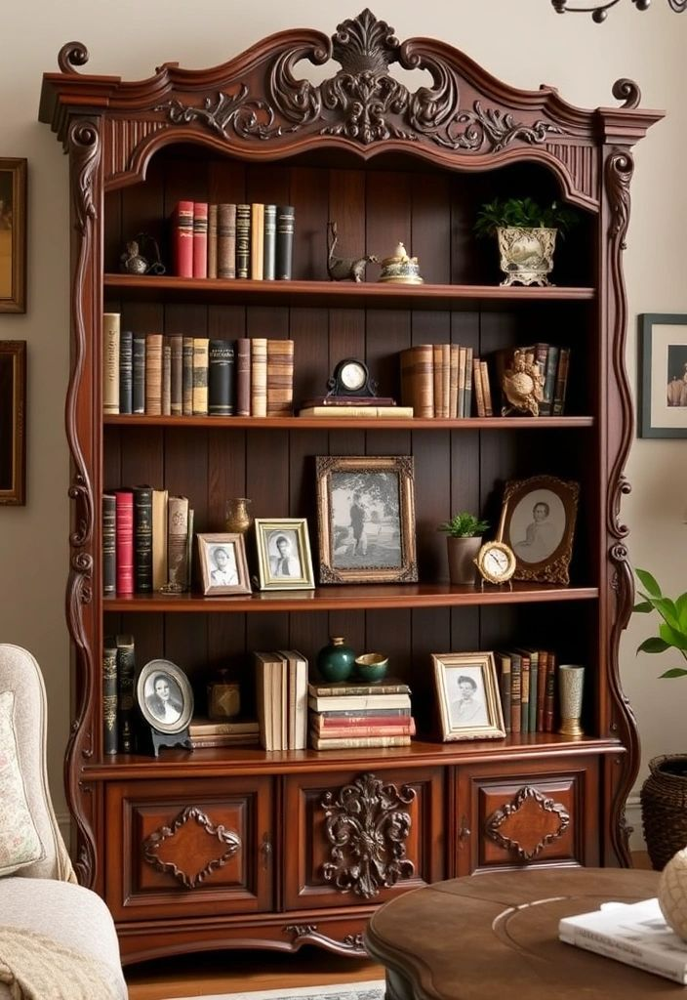

About Vintage Collectibles
At Vintage Collectibles, we celebrate the charm of the past through timeless treasures — cameras, vinyls, watches, and antiques that capture history in their design. Each piece we curate tells a story of craftsmanship, culture, and elegance from another era. Our mission is to preserve the beauty of vintage artistry and share it with those who value nostalgia and authenticity.


 
